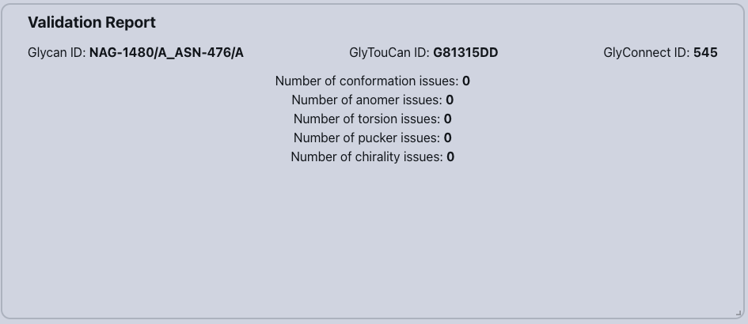
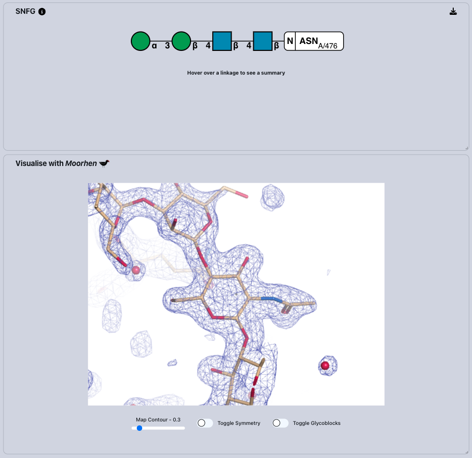

Carbohydrate Workshop
Part 2 - Validating Carbohydrates
1. Introduction
Welcome to Part 2 of the Carbohydrate Crystallography Workshop! If you completed Part 1, we will be validating the carbohydrate chain you modelled in Part 1. If you didn't finish Part 1, don't worry you can still follow along!
We will be using a software package called Privateer to validate our glycans. Privateer is the Swiss Army knife for carbohydrate structure validation, refinement and analysis. Carbohydrates, including O- and N-glycans attached to protein and lipid structures, are known to be important in cellular biology. Therefore, we want models of glycans to be as accurate as possible, but in many cases, carbohydrates have been found to be deposited into the Protein Data Bank with errors. Identifying these problems was the initial goal of Privateer and today Privateer is routinely used before structures are deposited.
Privateer is accessible in many interfaces such as CCP4i2, CCP4 Cloud, and CCP-EM, but we will be using the new Privateer Web App in this workshop.
2. Getting Started
To launch the Privateer Web App navigate to this URL.
🔨 Upload the the coordinate file and MTZ file generated in Part 1 of the workshop, by clicking on
the
Choose a file button.
After uploading both icons, you are ready to submit the structures for validation by Privateer, hit the
Submit button and Privateer will begin processing your structure within
your web browser.
Once Privateer has completed (should take only a few seconds), you will a see a table that contain a list of glycan chains (or ligands) in the model. Each entry in the table contains a chain ID, a linkage ID, an image representation of the glycan known as the Symbol Nomenclature for Glycans (SNFG) and two database accession IDs. There were a number of other glycans in the structure, but we are interested in the glycan on the newly modelled chain.
🔨 Click on the glycan chain that you added (on A/ASN/476) to open up a more detailed validation report, which will tell us how well you did!
3. Validation Report
Privateer identifies incorrect regiochemistry, stereochemistry and unlikely ring conformations, including:
- Conformation issues: As pyranose (sugar) rings have clear conformational preferences for the 4C1 chair ring pucker, any other detected ring conformation is highlighted as a possible issue.
- Anomer issues: Identifies discrepancies between the calculated anomer (alpha or beta) and that annotated in the related CCD code.
- Torsion issues: Reports the number of torsion pair outliers.
- Pucker issues: Focuses on the precise geometric distortion of the ring, often expressed in terms of puckering parameters.
- Chirality issues: Identifies discrepancies between the calculated anomer (D or L) and that annotated in the related CCD code.

💡 Does the glycan you modelled have any issues?
Hopefully not, but if you did, you would see what the problem was through this issue count.
You can also check whether the glycan you have created is already known about by looking for accession codes for the GlyTouCan and GlyConnect databases.
What are they?
The GlyTouCan database1 is an uncurated international repository of all known glycans from a range of sources. If your glycan has a GlyTouCan accession code, it has been seen before. The GlyConnect database is a knowledgebase which links varying data sources related to glycans, if your glycan has a GlyConnect accession code, it is likely to be confirmed via multiple independent methods.
4. SNFG and Moorhen Visualisation
The Symbol Nomenclature for Glycans (SNFG) is a standardised system that uses unique symbols to represent different monosaccharides in glycan structures.
The white box in the SNFG indicates the residue in the protein to which the glycan is attached. The different coloured shapes represent the different sugars in the glycan chains, with annotated links that inform the linkage type (e.g. alpha or beta linkage, from which atom number).

🔨 Hover over the links and sugars in the SNFG to provide more detailed validation information. If they are highlighted in orange, Privateer has detected an issue.
🔨 Click on the sugars in the SNFG will take you directly to that same sugar in the Moorhen viewer.
💡Does the density support the glycan chain you have modelled?
Hopefully the glycan you modelled has no issues, but in the future, using the Privateer Web App is a quick and easy way to check how well you've done with modelling glycans. Now, we will look at an example which could use some improvement.
5. Case Study
Refresh the Privateer page or click the logo in the top-left to get back to the start of the web app. We are ready to look at an example from the PDB with some errors.
🔨 Fetch PDB code ‘3QVP’ from the PDB.
🔨 Click on any rows to get detailed validation information about a specific glycan chain.
💡The first glycan chain in 3QVP has two issues:
- conformation issues
- torsion issue
🔨 Hover over the links and sugars in the SNFG to provide more detailed validation information. If they are highlighted in orange, Privateer has detected an issue.
💡What high energy conformer has been calculated by Privateer?
🔨 Click on the sugars in the SNFG will take you directly to that same sugar in the Moorhen viewer.
💡Does the density support the high energy ring conformer?
🔨 Try looking at these structures:
- 2H6O
- 5FJI
Which of these structures contains well-modelled sugars? What are the issues with the examples that are not well-modelled? Is it a biochemical or modelling error?